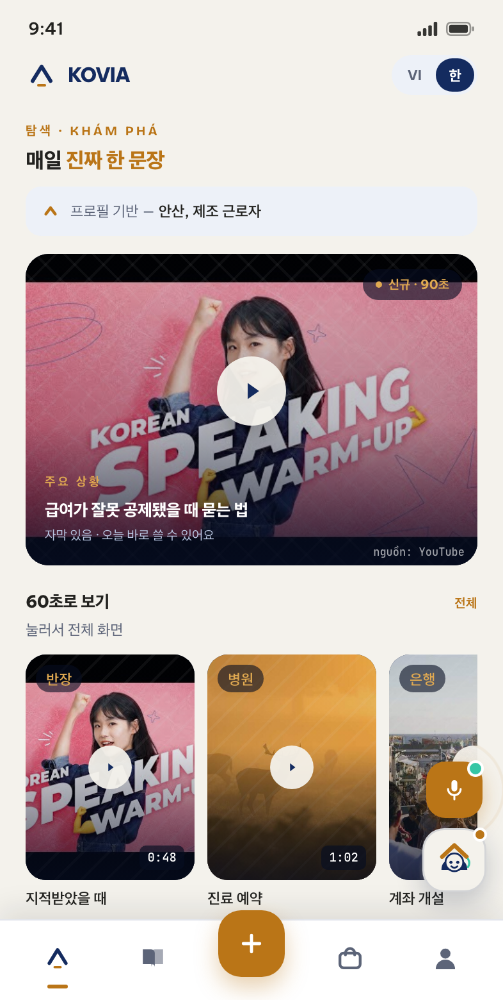
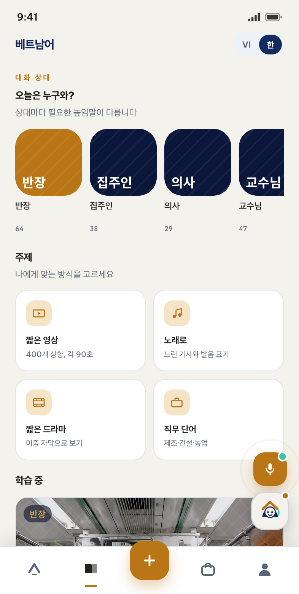
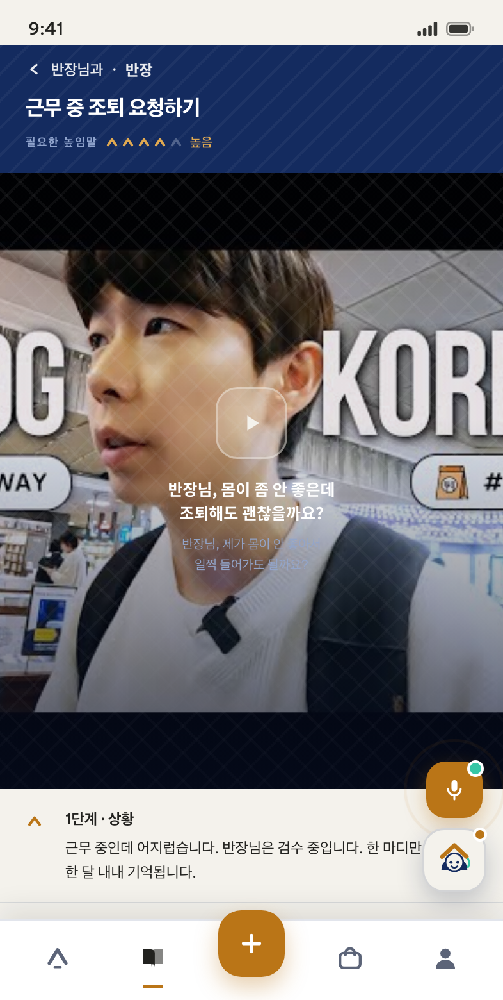
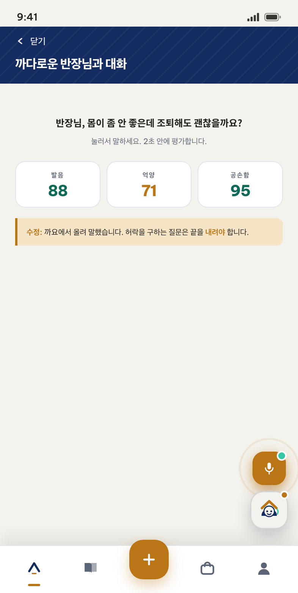
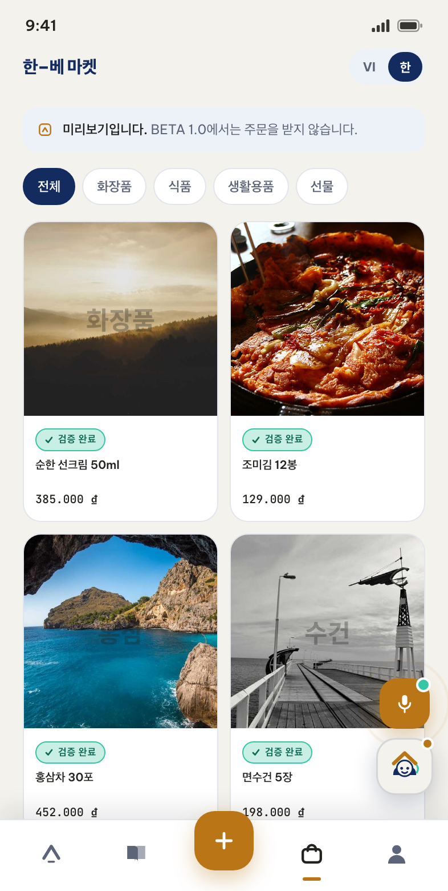
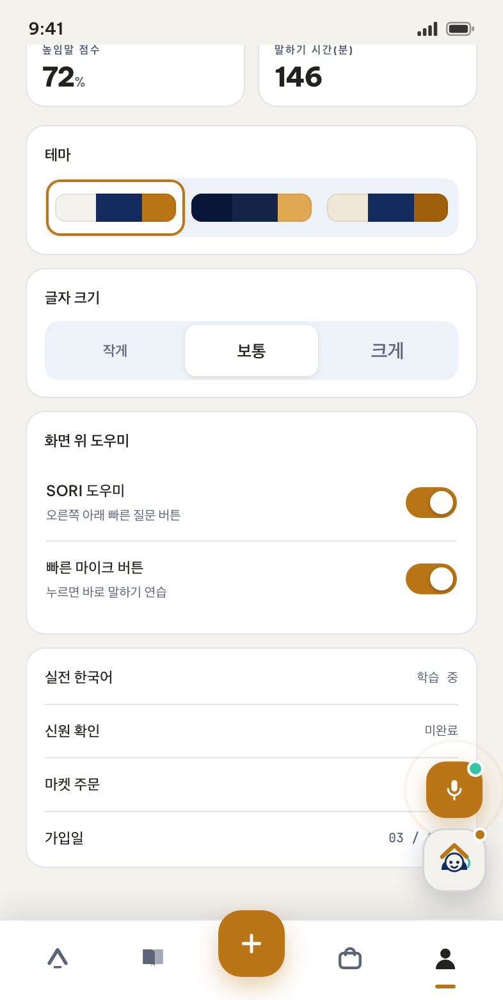
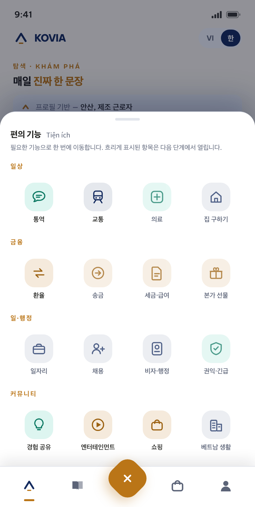
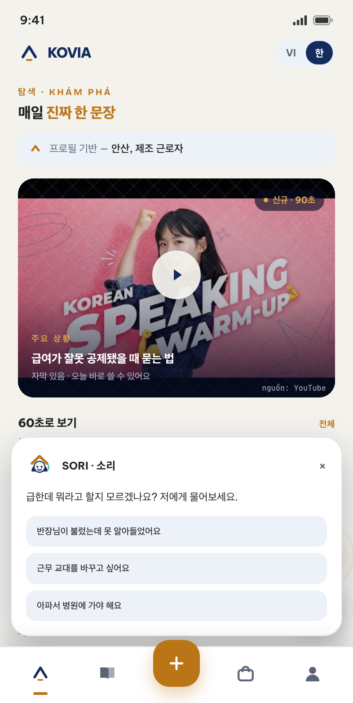

한 길 위에, 두 나라 — 하나의 길, 두 개의 고향
베트남–한국 회랑의 디지털 인프라입니다. 베트남 사람은 한국으로 가기 위한 역량과 신뢰를 쌓고, 한국 사람은 베트남에 들어오기 위한 사람·부지·물품·서류를 찾습니다 — 하나의 신원 레이어 위에서.
KOVIA는 한국어 학습 앱도, 전자상거래 플랫폼도 아닙니다. 베트남–한국 회랑의 신원과 신뢰 레이어이며, 그 위에 여러 응용 서비스가 올라갑니다.
오늘의 베트남–한국 회랑은 구조화되지 않은 신뢰 위에서 돌아갑니다. 페이스북 그룹, 아는 브로커, “형이 소개해 줬다”. 그 결과는 과도한 중개 수수료, 유학과 취업을 빙자한 사기, 그리고 직접 채용을 주저하는 한국 기업입니다. 한 사람에 대해 검증 가능한 디지털 기록, 즉 “역량 여권”을 가진 사업자는 아직 없습니다.
서비스를 파는 것이 아닙니다. 자산은 한 사람의 역량과 이력에 대한 디지털 기록이며, 다른 모든 사업은 그 위에서 수익을 냅니다.
베트남 → 한국 방향은 거의 전부 무료로 열어 밀도와 데이터를 쌓고, 한국 → 베트남 방향에서 높은 값으로 판매합니다. 오늘의 학습자가 내일 한국 기업이 돈을 내고 채용하는 인재입니다.
매년 수만 명이 3~5년의 한국 생활을 마치고 귀국하는 반면, 베트남의 한국 FDI 기업은 반장과 통역이 늘 부족합니다. “가고–배우고–일하고–돌아오고–다시 채용되는” 고리를 잇습니다.
| 계층 | 복제 가능한가 | 비고 |
|---|---|---|
| 영상 콘텐츠 | 가능 — 3개월이면 | 해자가 아님 |
| AI 모델 | 가능 — API는 누구나 | 해자가 아님 |
| 마켓플레이스 | 가능 — 자본을 태우면 | 해자가 아님 |
| 수십만 명의 누적 역량 프로필 | 불가능 | ← 해자 |
| 특정 지역의 커뮤니티 밀도 | 매우 어려움 | ← 해자 |
| 협회·학교·산업단지·기관과의 관계 | 매우 어려움 | ← 해자 |
2검증된 성공 연결(Verified Successful Connections). 세 가지 독립적 근거가 모두 갖춰졌을 때만 집계합니다: 플랫폼을 통한 거래 기록, 양측의 상호 확인, 그리고 외부 증적(근로계약서, 입학 허가서, 인보이스, 배송 수령증).
EPS 쿼터의 대폭 축소는 인력 송출에 베팅해서는 안 된다는 뜻입니다. 실수요는 유학, E-7 비자, 그리고 특히 베트남 현지 한국 기업에서의 취업으로 몰리고 있습니다 — 훨씬 큰 시장이며 인력 송출 면허 문제도 없습니다.
| # | 고객군 | 핵심 페인포인트 | 지불력 | 우선순위 |
|---|---|---|---|---|
| A1 | 재한 베트남인 | 생존 한국어, 비자, 의료, 세금, 송금, 외로움 | 낮음 · 고빈도 | ★★★ |
| A2 | 한국행 준비 중인 베트남인 | 어학, 학교와 회사 선택, 사기 우려, 중개 수수료 | 높음 · 일회성 | ★★★ |
| A3 | 문화로 배우는 학습자 | 학습이 지루하고, 실제로 쓰지 못함 | 낮음 | ★★★ (유입) |
| B1 | 베트남에 진출하는 한국 기업 | 시장 조사, 부지와 공장 임차, 법무, 통역, 채용 | 매우 높음 | ★★ |
| B2 | 베트남 거주 한국인 | 베트남어, 주거, 의료, 학교 | 높음 | ★ |
| C | 양국 소상공인과 중소기업 | 시작 방법, 물류, 결제, 검증 | GMV의 % | ★★ |
A3에 대한 참고: 이 그룹은 “돈이 없다”는 이유로 흔히 저평가됩니다. 틀렸습니다. A3는 가장 저렴한 유입 경로이자 한국 상품의 최대 구매층입니다. 한국 문화를 좋아하는 사람이 곧 한국 화장품·식품·패션을 사는 사람입니다. 한–베 마켓을 후반부가 아니라 BETA에 바로 넣는 이유입니다.
실전 콘텐츠 (AI Portal 덕분에 원가 거의 0)
↓
학습자와 시청자
↓
역량 데이터 + 행동 데이터
↓
검증된 프로필 (Skill Passport)
↓
한국 기업이 채용·구매·제휴에 비용을 지불
↓
실제 일자리, 실제 주문
↓
신뢰가 쌓이고 → 스스로 콘텐츠를 만들고 → 지인을 데려옴
↓
(처음으로, 더 강하게)
3
BETA는 앞의 세 기둥을 켜고 네 번째를 시작합니다. 나머지는 지도이지 첫 달의 계획이 아닙니다. 첫 번째 규율은 이것입니다. 콘텐츠 레이어와 신원 레이어가 충분히 두꺼워지기 전에는 어떤 마켓플레이스도 열지 않는다.
| 기둥 | 이름 | 설명 | 단계 |
|---|---|---|---|
| P1 | Learn — 실전 한국어 | Scene 영상 + AI 말하기 연습 + 튜터 | BETA |
| P2 | Culture — 문화와 경험 | 미니 다큐, 문화 해설, 커뮤니티, 오프라인 | BETA |
| P3 | Market — 한–베 마켓 | 한국 상품의 베트남 유통, 검증된 판매자 | BETA |
| P4 | Store — 온라인 상점 | 판매자가 직접 개설·번역·운영 | BETA 후반 |
| P5 | Passport — 역량 프로필 | 신원 + 역량 + 이력 + 커뮤니티 보증 | 2단계 |
| P6 | Rights — 권익과 긴급 지원 | 비자, 의료, 세금, 노동 분쟁, 사기 대응 | 2단계 |
| P7 | Career — 취업과 유학 | 베트남 현지 한국 기업 취업을 최우선 | 2–3단계 |
| P8 | Business — 소프트 랜딩 | 한국 중소기업 대상 랜딩 서비스, 통역, 실사, 채용 | 2–3단계 |
| P9 | Return — 귀국자 네트워크 | 귀국자 ↔ 베트남 내 한국 FDI 기업 | 4단계 |
Scene은 문법 주제가 아니라 권력 관계로 분류합니다. 상사와, 동료와, 서비스 직원과, 집주인과, 학교와, 한국인 가족과, 관공서와. 높임말을 틀리는 것이 문법을 틀리는 것보다 위험합니다. 각 Scene은 60~90초 세로 영상이며 다섯 박자 공식을 따릅니다.
1박 — HOOK (0–5초) : 궁금증을 부르는 한 문장 / 긴장된 상황 2박 — KEY PHRASE (5–25초): 핵심 문장 1–3개, 천천히, 이중 자막 3박 — CULTURE (25–50초) : 왜 그렇게 말하는가, 틀리면 무슨 일이 생기는가 4박 — PRACTICE (50–75초) : 따라 말하기, 반복할 여백을 둠 5박 — ACTION (75–90초) : 앱에서 AI와 연습 / 다음 Scene 보기
입구 1: Zalo Mini App 입구 2: 카카오톡 채널 입구 3: Web / PWA
(베트남 주력) (한국 주력, 2단계) (SEO, B2B, 데스크톱)
│ │ │
└────────────────────────────┼──────────────────────────┘
│
══════ 단 하나의 두뇌 ══════
신원 · 동의(consent) · 프로필 · CRM
예약 · 결제 · 주문 · 콘텐츠
지식 베이스(RAG) · 감사 로그
4
BETA 1.0 빌드의 주요 화면 여덟 개 — 전체가 베트남어·한국어 이중 언어이며, 세 가지 테마와 세 가지 글자 크기를 제공합니다.

프로필 기반 개인화 피드: 주요 Scene, 60초 가로 스크롤, 노래로 배우기, 짧은 뉴스.

강의가 아니라 대화 상대를 먼저 고릅니다 — 상대마다 필요한 높임말이 다릅니다.

상황, 표현, 문화 해설, 말하기 연습, 실전 사용 기록까지 한 흐름으로.

발음, 억양 그리고 공손함까지 평가하고 구체적인 교정을 제시합니다.

모든 상품에 “검증 완료” 표식. 가격이 아니라 확실성으로 경쟁합니다.

완료한 상황, 실전 사용, 높임말 점수 — 2단계 Skill Passport의 데이터 기반.

네 그룹, 열여섯 기능. 흐리게 표시된 항목은 다음 단계에서 열립니다.

급할 때 바로 묻습니다. SORI는 동행자이며, 자신이 AI임을 늘 밝힙니다.
브라우저에서 실제로 동작하는 인터랙티브 빌드를 캡처한 화면이며, 정적인 디자인 시안이 아닙니다. 표시된 데이터는 예시이고, 상품 이미지와 영상은 레이아웃 확인용 임시 소스입니다.
5아래 세 화면은 제품 논지가 구체적인 동작으로 바뀌는 지점입니다. 세 화면만 보실 수 있다면 이 세 개를 보십시오.
어학 앱은 모두 “1과: 자모”로 시작합니다. 여기서 첫 질문은 “오늘은 누구와?”입니다. 같은 말이라도 반장님에게 하는 말과 룸메이트에게 하는 말은 서로 다른 문장이고, 잘못 말했을 때의 대가는 점수로 끝나지 않기 때문입니다.
AI는 발음과 억양만이 아니라 공손함을 채점하고 구체적으로 고쳐 줍니다. “까요에서 올려 말했습니다. 허락을 구하는 질문은 끝을 내려야 하며, 그렇지 않으면 따지는 것처럼 들립니다.” 시험 대비 앱이 하지 않는 일입니다.
편의 기능 패널은 사용자가 학습만 필요한 것이 아님을 플랫폼이 인정하는 자리입니다. 통역, 환율 조회, 집 구하기, 비자 문의, 일자리가 함께 필요합니다. 아이콘 색은 일의 성격을 따릅니다 — 금색은 돈이 오가는 일, 남색은 서류가 필요한 일.
한글은 라틴 문자보다 높이가 커서 별도의 행간이 필요합니다. 모든 화면은 승인 전에 두 언어 모두에서 검증합니다.
교대 근무자와 이동 중 사용을 위한 어두운 “야간” 테마, 40대 이상 사용자를 위한 큰 글자 크기를 제공합니다.
SORI와 마이크 버튼은 내 프로필에서 끌 수 있습니다. 떠 있는 도우미가 내용을 가리는 것은 불편하며, 결정권은 사용자에게 있어야 합니다.
마켓에는 “미리보기입니다 — BETA 1.0에서는 주문을 받지 않습니다”라고 명시합니다. 아직 열지 않은 기능은 흐리게 두고 누를 수 없게 합니다.
Portal은 별도의 도구가 아니라 사용자 앱 자체의 백엔드입니다. 신원, 권한, 데이터 저장소를 공유합니다. 광고비 0 전략의 핵심 무기입니다.
공개 소스와 공식 API로 트렌드를 수집하고, 수요 점수로 주제를 정렬합니다.
다섯 박자 공식에 맞춰 대본을 생성하고 승인된 지식 베이스와 대조합니다. 제작 전 사람이 검수합니다.
이중 자막, 더빙, 썸네일, 비율별 컷. 저작권 있는 자산은 절대 사용하지 않습니다.
원본 하나에서 8~12개 변형을 생성하고, 플랫폼별 훅과 두 시간대에 맞춘 발행 일정을 적용합니다.
댓글을 네 갈래로 분류합니다. 비자·법률·의료 문의는 반드시 사람에게 넘깁니다.
좋은 댓글은 새 Scene으로, 주문 후기는 판매 콘텐츠로 바꿉니다.
게시물 → Zalo OA → 가입 → 학습 → 구매까지 추적하고, Scene별 ROI 표를 만듭니다.
콘텐츠 규범, 완전한 감사 로그, 캠페인 전체를 5분 안에 내리는 긴급 정지 버튼.
| Portal 없이 | Portal 사용 | |
|---|---|---|
| 3인 팀의 주당 콘텐츠 | 8 – 12건 | 45 – 60건 |
| 기획에서 발행까지 | 3 – 5일 | 6 – 12시간 |
| 콘텐츠 1건당 원가 | 40 – 80만 VND | 6 – 12만 VND |
| 커버 플랫폼 수 | 2 – 3 | 5 – 6 |
국경 간 규제 준수에 관하여: 한국 사용자 데이터는 PIPA에 따라 한국에, 베트남 사용자 데이터는 시행령 13/2023에 따라 베트남에 저장합니다. 알림 수신 동의, 마케팅 동의, 국경 간 이전 동의는 각각 별개의 동의로 받으며 묶지 않습니다.
7BETA는 최종 제품의 축소판이 아닙니다. 광고비 0으로 돌아가는 유입과 리텐션의 기계이며, 세 가지 결정적 질문에 답하기 위해 존재합니다.
조회수가 아니라 D7/D30 리텐션으로 측정합니다.
첫 마켓 주문과 첫 튜터 수업으로 측정합니다.
“빌린 땅”에서 “내 땅”으로의 전환율로 측정합니다.
| 구분 | 지표 | 목표 |
|---|---|---|
| 유입 | 5개 플랫폼 총 팔로워 | 150,000 |
| 오가닉 CAC | 팔로워당 < 3,000 VND | |
| 자산화 | Zalo OA 팔로워 | 30,000 |
| 플랫폼 가입 계정 | 40,000 | |
| 인게이지먼트 | 주간 활성 학습자 | 5,000 |
| D30 리텐션 | > 22% | |
| 거래 | 월 마켓 주문 수 | 500 |
| 월 GMV | 4 – 6억 VND | |
| 신뢰 | 주문 클레임 비율 | < 2% |
| 단계 | 기간 | 명칭 | 주요 목표 |
|---|---|---|---|
| 0 | 1 – 2개월 | 준비 | 실사, 브랜드, Portal v0, 법인 설립 착수 |
| 1 | 3 – 11개월 | BETA / 파일럿 | Web-App + Zalo OA + 3개 언어 웹사이트, Learn·Culture·마켓 v1·Portal·초대제 Store Builder |
| 2 | 12 – 18개월 | 신뢰와 확장 | 한국 법인, Skill Passport, 권익 센터, 튜터 개방, 마켓 개방, 카카오 연동 |
| 3 | 19 – 24개월 | 한국 → 베트남 방향 | B2B 랜딩 서비스 확대, 채용, ID Graph, 베트남 → 한국 상품 개방, 운영 손익분기 |
| 4 | 25 – 30개월 | 회랑 인프라 | 귀국자 네트워크, 금융 파트너십, 일본·대만 회랑 확장 검토 |
0단계의 중단 조건: 시험 제작한 영상 30편이 리텐션 벤치마크에 미달하면 BETA로 넘어가지 않습니다. 콘텐츠 포맷을 고치러 돌아갑니다. 이 사업 전체에서 가장 값싼 리스크 통제 지점입니다.
8배분 원칙은 이렇습니다. 한국 → 베트남 방향의 매출이 베트남 → 한국 방향의 무료 제품 전체를 보조합니다. 이 모델의 재무적 척추입니다.
| # | 매출원 | 개시 | 마진 | 비고 |
|---|---|---|---|---|
| 1 | 한국 기업 대상 문화·언어 교육 | 6개월 | 매우 높음 | 가장 쉽고 현금이 빠르며 규모가 필요 없음 |
| 2 | 한국 중소기업 랜딩 서비스 | 9개월 | 매우 높음 | 건당 5,000–50,000 USD. 연 60–100건이면 전체 운영이 유지됨 |
| 3 | 마켓 수수료 | 6개월 | 중간 | 초기 8–15%, 확장하며 점진 인하 |
| 4 | 튜터·강좌 수익 배분 | 7개월 | 중간 | 20–30% |
| 5 | 학습자 Pro 구독 | 9개월 | 높음 | 월 99,000–199,000 VND |
| 6 | Store Builder SaaS | 9개월 | 높음 | 구독 + 거래 수수료 |
| 7 | 베트남 내 한국 기업 채용 | 14개월 | 높음 | 채용 성사 기준 수수료 |
단위 경제성을 읽는 법: 유료 학습자의 LTV는 약 750,000 VND, 마켓 구매자의 1년차 LTV는 약 270,000 VND로 얇습니다. 그러나 B2B 랜딩 고객 한 곳의 LTV는 11,000–30,000 USD입니다. B2C의 단위 경제성은 데이터 자산과 커뮤니티 밀도를 쌓는 비용으로 볼 때에만 타당합니다 — 그것이 B2B 고객을 만들고 해자를 만듭니다. 손익분기 경로는 12개월 차 운영 손익분기 근접, 18개월 차 안정적 손익분기, 24개월 차 흑자 전환입니다.
2계층 구조입니다. KOVIA는 중립적이고 세 언어 모두에서 자연스럽게 읽히며(코비아), 웹·계약·기업용 대시보드·투자 자료에 사용합니다. HANGIL · 한길은 “하나의 길”이면서 동시에 “한국으로 가는 길”을 함의하며, 커뮤니티 채널과 학습자에게 닿는 모든 접점에 사용합니다.
심볼은 도장입니다. 모서리가 둥근 사각 테두리 안에 위로 향한 삼각과 가로로 놓인 금색 획이 들어갑니다. 테두리는 확인되었음을, 삼각은 지붕·산·논라(베트남 전통 모자)·자음 ㅅ·상승 화살표를, 금색 획은 땅과 확인 표시를 뜻합니다. 구성 방식은 한글 음절 조합의 논리를 그대로 따릅니다 — 자음이 위, 가로 모음이 아래, 하나의 네모 안에. 형태 자체가 파는 것을 말합니다. 검증 가능한 신뢰입니다.
| 역할 | 색 | 코드 | 사용처 |
|---|---|---|---|
| 주조색 | 남색 | #142B5F | 플랫폼, B2B, 제목 |
| 강조색 | 금색 | #BA7517 | 커뮤니티 채널, 액션 버튼, HANGIL |
| AI · 인터랙션 | 민트 | #35C6A5 | AI 영역, 긍정 상태 |
서체: 라틴·베트남어는 Be Vietnam Pro, 한국어는 Pretendard. 캐릭터 SORI · 소리는 교사가 아닌 동행자 역할입니다. SORI 머리 위의 지붕이 곧 심볼의 삼각이므로, 캐릭터와 로고는 같은 세계에 속합니다.
9한국행 취업·유학의 유료 알선은 인력 송출 면허 문제에 걸립니다. BETA는 여기에 손대지 않습니다.
비자, 취업, 소득을 보장하지 않습니다. 한 번의 위반으로 신원 레이어 전체의 신뢰를 잃습니다.
한국 드라마 클립, K-pop 뮤직비디오, 저작권 있는 음원을 쓰지 않습니다. 채널을 잃으면 광고비 0 전략 전체를 잃습니다.
페이스북, 틱톡, 유튜브 위에 짓는 것은 빌린 땅 위에 짓는 것입니다. 알고리즘 변경 한 번, 채널 정지 한 번이면 전부 잃습니다. 그래서 원칙은 강제입니다. 모든 콘텐츠는 내 땅으로 오는 경로를 가져야 합니다 — Zalo OA, 플랫폼 계정, 이메일, 전화번호. 규율 지표는 이것입니다. 빌린 땅에서 내 땅으로의 전환율이 매월 최소 8%. 팔로워는 느는데 Zalo OA가 늘지 않는다면 그것은 허수 성장입니다.
| 문서 | 내용 |
|---|---|
| 통합 소개 페이지 | 온라인 개요. 브라우저에서 바로 열리는 두 개의 인터랙티브 데모 포함 |
| KOVIA Branding | 베트남어·한국어 브랜드 가이드: 로고 4종 변형, 여백 규정, 축소 규칙, 색상, 서체, SORI, 산출 파일 목록 |
| KOVIA 사업 제안서 | 제안서 v2.5 전문, 17개 장: 전략, 시장, 제품 아키텍처, BETA, Portal, 마켓, 기술, 30개월 로드맵, 재무, 법률 리스크 |
| 1단계 상세 계획 | BETA 9개월 실행 계획: 5개 조직, 3개 사이클, 크리티컬 패스, 월별 산출물, 지표표, 2단계 진입 게이트 |
| KOVIA APP 데모 | 사용자 앱의 인터랙티브 빌드 — 본 문서의 여덟 화면 |
| Management Portal 데모 | 운영 시스템의 인터랙티브 빌드: 7단계 제작 흐름, 승인 대기열, 데이터 소스, 거버넌스 |
모든 문서와 두 개의 데모는 아래에서 공개되어 있습니다
koalaland-workplace.github.io/KOVIA_demo
KOVIA · HANGIL 한길 — 사업 개요 · 제안서 v2.5 · 브랜드 아이덴티티 v2.0 · 2026.07.27. 검토와 의견 수렴을 위한 문서이며 투자 권유 자료가 아닙니다. 모든 수치는 제안서 작성 시점의 추정치이며 확약이 아닙니다.
10